(Terence and Jeremy teach in University of San Francisco's MS in Data Science program. You might know Terence as the creator of the ANTLR parser generator. For more material, see Jeremy's fast.ai courses. Kerem and Christopher are current MS Data Science students.)
Updated April 4, 2018 to include many more experiments in the Experimental results section.The scikit-learn Random Forest feature importance and R's default Random Forest feature importance strategies are biased. To get reliable results in Python, use permutation importance, provided here and in our rfpimp package (via pip). For R, use importance=T in the Random Forest constructor then type=1 in R's importance() function. In addition, your feature importance measures will only be reliable if your model is trained with suitable hyper-parameters.
Contents
Training a model that accurately predicts outcomes is great, but most of the time you don't just need predictions, you want to be able to interpret your model. For example, if you build a model of house prices, knowing which features are most predictive of price tells us which features people are willing to pay for. Feature importance is the most useful interpretation tool, and data scientists regularly examine model parameters (such as the coefficients of linear models), to identify important features.
Feature importance is available for more than just linear models. Most random Forest (RF) implementations also provide measures of feature importance. In fact, the RF importance technique we'll introduce here (permutation importance) is applicable to any model, though few machine learning practitioners seem to realize this. Permutation importance is a common, reasonably efficient, and very reliable technique. It directly measures variable importance by observing the effect on model accuracy of randomly shuffling each predictor variable. This technique is broadly-applicable because it doesn't rely on internal model parameters, such as linear regression coefficients (which are really just poor proxies for feature importance).
We recommend using permutation importance for all models, including linear models, because we can largely avoid any issues with model parameter interpretation. Interpreting regression coefficients requires great care and expertise; landmines include not normalizing input data, properly interpreting coefficients when using Lasso or Ridge regularization, and avoiding highly-correlated variables (such as country and country_name). To learn more about the difficulties of interpreting regression coefficients, see Statistical Modeling: The Two Cultures (2001) by Leo Breiman (co-creator of Random Forests).
One of Breiman's issues involves the accuracy of models. The more accurate our model, the more we can trust the importance measures and other interpretations. Measuring linear model goodness-of-fit is typically a matter of residual analysis. (A residual is the difference between predicted and expected outcomes). The problem is that residual analysis does not always tell us when the model is biased. Breiman quotes William Cleveland, “one of the fathers of residual analysis,” as saying residual analysis is an unreliable goodness-of-fit measure beyond four or five variables.
If a feature importance technique well-known to Random Forest implementers gives direct and reliable results, why have we written an article entitled “Beware Default Random Forest Importances?”
To prepare educational material on regression and classification with Random Forests (RFs), we pulled data from Kaggle's Two Sigma Connect: Rental Listing Inquiries competition and selected a few columns. Here are the first three rows of data in our data frame, df, loaded from data file rent.csv (interest_level is the number of inquiries on the website):
We trained a regressor to predict New York City apartment rent prices using four apartment features in the usual scikit way:
In order to explain feature selection, we added a column of random numbers. (Any feature less important than a random column is junk and should be tossed out.)
After training, we plotted the rf.feature_importances_ as shown in Figure 1(a). Wow! New Yorkers really care about bathrooms. The number of bathrooms is the strongest predictor of rent price. That's weird but interesting.
| 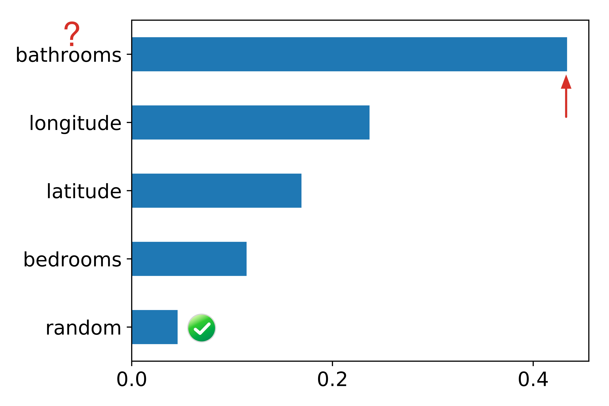 | 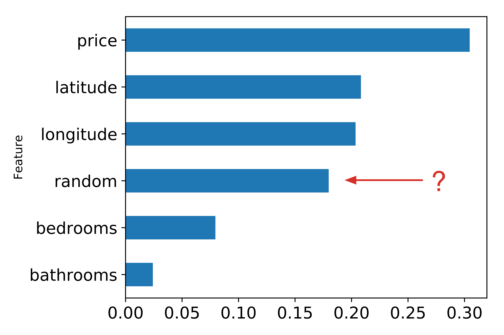 |
| Figure 1(a). scikit-learn default importances for Random Forest regressor predicting apartment rental price from 4 features + a column of random numbers. Random column is last, as we would expect but the importance of the number of bathrooms for predicting price is highly suspicious. | Figure 1(b). scikit-learn default importances for Random Forest classifier predicting apartment interest level (low, medium, high) using 5 features + a column of random numbers. Highly suspicious that random column is much more important than the number of bedrooms. |
As expected, Figure 1(a) shows the random column as the least important.
Next, we built an RF classifier that predicts interest_level using the other five features and plotted the importances, again with a random column:
The most common mechanism to compute feature importances, and the one used in scikit-learn's RandomForestClassifier and RandomForestRegressor, is the mean decrease in impurity (or gini importance) mechanism (check out the Stack Overflow conversation). The mean decrease in impurity importance of a feature is computed by measuring how effective the feature is at reducing uncertainty (classifiers) or variance (regressors) when creating decision trees within RFs. The problem is that this mechanism, while fast, does not always give an accurate picture of importance. Breiman and Cutler, the inventors of RFs, indicate that this method of “adding up the gini decreases for each individual variable over all trees in the forest gives a fast variable importance that is often very consistent with the permutation importance measure.” (Emphasis ours and we'll get to permutation importance shortly.)
We've known for years that this common mechanism for computing feature importance is biased; i.e. it tends to inflate the importance of continuous or high-cardinality categorical variables For example, in 2007 Strobl et al pointed out in Bias in random forest variable importance measures: Illustrations, sources and a solution that “the variable importance measures of Breiman's original Random Forest method ... are not reliable in situations where potential predictor variables vary in their scale of measurement or their number of categories.” That's unfortunate because not having to normalize or otherwise futz with predictor variables for Random Forests is very convenient.
Breiman and Cutler also described permutation importance, which measures the importance of a feature as follows. Record a baseline accuracy (classifier) or R2 score (regressor) by passing a validation set or the out-of-bag (OOB) samples through the Random Forest. Permute the column values of a single predictor feature and then pass all test samples back through the Random Forest and recompute the accuracy or R2. The importance of that feature is the difference between the baseline and the drop in overall accuracy or R2 caused by permuting the column. The permutation mechanism is much more computationally expensive than the mean decrease in impurity mechanism, but the results are more reliable. The permutation importance strategy does not require retraining the model after permuting each column; we just have to re-run the perturbed test samples through the already-trained model.
Any machine learning model can use the strategy of permuting columns to compute feature importances. This fact is under-appreciated in academia and industry. Most software packages calculate feature importance using model parameters if possible (e.g., the coefficients in linear regression as discussed above). A single importance function could cover all models. The advantage of Random Forests, of course, is that they provide OOB samples by construction so users don't have to extract their own validation set and pass it to the feature importance function.
As well as being broadly applicable, the implementation of permutation importance is simple—here is a complete working function:
Notice that the function does not normalize the importance values, such as dividing by the standard deviation. According to Conditional variable importance for random forests, “the raw [permutation] importance… has better statistical properties.” Those importance values will not sum up to one and it's important to remember that we don't care what the values are per se. What we care about is the relative predictive strengths of the features. (When using the importances() function in R, make sure to use scale=F to to prevent this normalization.)
The key to this “baseline minus drop in performance metric” computation is to use a validation set or the OOB samples, not the training set (for the same reason we measure model generality with a validation set or OOB samples). Our permutation_importances() function expects the metric argument (a function) to use out-of-bag samples when computing accuracy or R2 because there is no validation set argument. (We figured out how to grab the OOB samples from the scikit RF source code.) You can check out our functions that compute the OOB classifier accuracy and OOB regression R2 score (without altering the RF model state). Here are two code snippets that call the permutation importance function for regressors and classifiers:
To test permutation importances, we plotted the regressor and classifier importances, as shown in Figure 2(a) and Figure 2(b), using the same models from above. Both models included a random column, which correctly show up as the least important feature. The regressor in Figure 1(a) also had the random column last, but it showed the number of bathrooms as the strongest predictor of apartment rent price. The permutation importance in Figure 2(a) places bathrooms more reasonably as the least important feature, other than the random column.
| 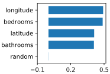 | 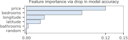 |
| Figure 2(a). Importances derived by permuting each column and computing change in out-of-bag R2 using scikit-learn regressor. Predicting apartment rental price from 4 features + a column of random numbers. | Figure 2(b). Importances derived by permuting each column and computing change in out-of-bag accuracy using scikit-learn Random Forest classifier. |
The classifier default importances in Figure 1(b) are plausible, because price and location matter in real estate market. Unfortunately, the importance of the random column is in the middle of the pack, which makes no sense. Figure 2(b) places the permutation importance of the random column last, as it should be. One could also argue that the number of bedrooms is a key indicator of interest in an apartment, but the default mean-decrease-in-impurity gives the bedrooms feature little weight. The permutation importance in Figure 2(b), however, gives a better picture of relative importance.
Permutation importance is pretty efficient and generally works well, but Strobl et al show that “permutation importance over-estimates the importance of correlated predictor variables.” in Conditional variable importance for random forests. It's unclear just how big the bias towards correlated predictor variables is, but there's a way to check.
Permutation importance does not require the retraining of the underlying model in order to measure the effect of shuffling variables on overall model accuracy. Because training the model can be extremely expensive and even take days, this is a big performance win. The risk is a potential bias towards correlated predictive variables.
If we ignore the computation cost of retraining the model, we can get the most accurate feature importance using a brute force drop-column importance mechanism. The idea is to get a baseline performance score as with permutation importance but then drop a column entirely, retrain the model, and recompute the performance score. The importance value of a feature is the difference between the baseline and the score from the model missing that feature. This strategy answers the question of how important a feature is to overall model performance even more directly than the permutation importance strategy.
If we had infinite computing power, the drop-column mechanism would be the default for all RF implementations because it gives us a “ground truth” for feature importance. We can mitigate the cost by using a subset of the training data, but drop-column importance is still extremely expensive to compute because of repeated model training. Nonetheless, it's an excellent technique to know about and is a way to test our permutation importance implementation. The importance values could be different between the two strategies, but the order of feature importances should be roughly the same.
The implementation of drop-column is a straightforward loop like the permutation implementation and works with any model. For Random Forests, we don't need a validation set, nor do we need to directly capture OOB samples for performance measurement. In this case, we are retraining the model and so we can directly use the OOB score computed by the model itself. Here is the complete implementation:
Notice that we force the random_state of each model to be the same. For the purposes of creating a general model, it's generally not a good idea to set the random state, except for debugging to get reproducible results. In this case, however, we are specifically looking at changes to the performance of a model after removing a feature. By controlling the random state, we are controlling a source of variability. Any change in performance should be due specifically to the drop of a feature.
Figure 3(a) and Figure 3(b) plot the feature importances for the same RF regressor and classifier from above, again with a column of random numbers. These results fit nicely with our understanding of real estate markets. Also notice that the random feature has negative importance in both cases, meaning that removing it improves model performance.
| 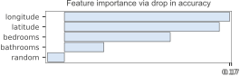 |
|
| Figure 3(a). Importances derived by dropping each column, retraining scikit-learn Random Forest regressor, and computing change in out-of-bag R2. Predicting apartment rental price from 4 features + a column of random numbers. The importance of the random column is at the bottom as it should be. | Figure 3(b). Importances derived by dropping each column, retraining scikit-learn Random Forest classifier, and computing change in out-of-bag accuracy. Predicting apartment interest level (low, medium, high) using 5 features + a column of random numbers. The importance of the random column is at the bottom as it should be. |
That settles it for Python, so let's take a look at R, another popular language used for machine learning.
Unfortunately, R's default importance strategy is mean-decrease-in-impurity, just like scikit, and so results are again unreliable. The reason for this default is that permutation importance is slower to compute than mean-decrease-in-impurity. For example, here's a code snippet (mirroring our Python code) to create a Random Forest and get the feature importances that traps the unwary:
To get reliable results, we have to turn on importance=T in the Random Forest constructor function, which then computes both mean-decrease-in-impurity and permutation importances. After that, we have to use type=1 (not type=2) in the importances() function call:
Make sure that you don't use the MeanDecreaseGini column in the importance data frame; you want column MeanDecreaseAccuracy.
It's worth comparing R and scikit in detail. It not only gives us another opportunity to verify the results of our homebrewed permutation implementation, but we can also demonstrate that R's default type=2 importances have the same issues as scikit's only importance implementation.
R's mean-decrease-in-impurity importance (type=2) gives the same implausible results as we saw with scikit. To demonstrate this, we trained an RF regressor and classifier in R using the same data set and generated the importance graphs in Figure 4, which mirror the scikit graphs in Figure 1.
| 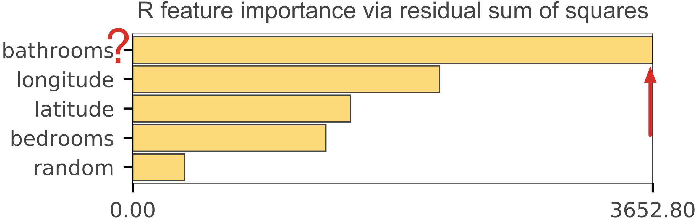 |

|
| Figure 4(a). R's type=2 importances for Random Forest regressor predicting apartment rental price from 4 features + a column of random numbers. Random column is last, as we would expect but the importance of the number of bathrooms for predicting price is highly suspicious. | Figure 4(b). R's type=2 importances for Random Forest classifier predicting apartment interest level (low, medium, high) using 5 features + a column of random numbers. Highly suspicious that random column is much more important than the number of bedrooms. |
As a means of checking our permutation implementation in Python, we plotted and compared our feature importances side-by-side with those of R, as shown in Figure 5 for regression and Figure 6 for classification. The importance values themselves are different, but the feature order and relative levels are very similar, which is what we care about.
| 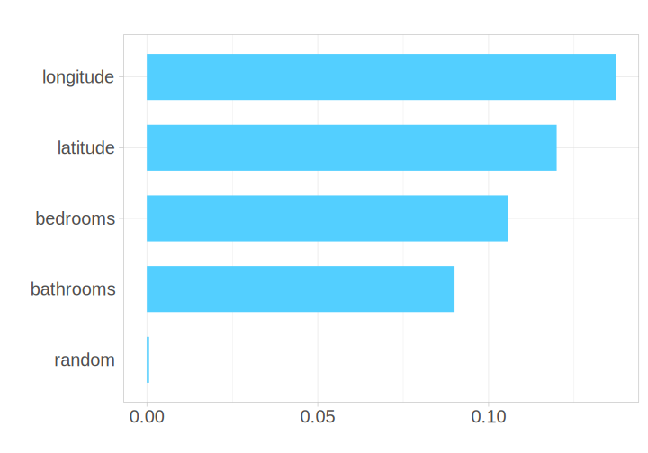 | |
| Figure 5(a). R's type=1 permutation importance for RF regressor. | Figure 5(b). Python permutation importance for RF regressor |
| 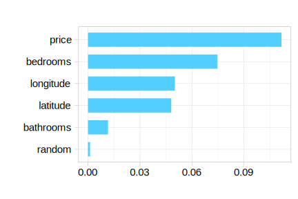 | |
| Figure 6(a). R's type=1 permutation importance for RF classifier. | Figure 6(b). Python permutation importance for RF classifier. |
For completeness, we implemented drop-column importance in R and compared it to our Python implementation, as shown in Figure 8 for regression and Figure 9 for classification.
| 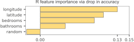 | |
| Figure 8(a). Importances derived by dropping each column, retraining an RF regressor in R, and computing the change in out-of-bag R2. | Figure 8(b). Importances derived by dropping each column, retraining a scikit RF regressor, and computing the change in out-of-bag R2. |
| 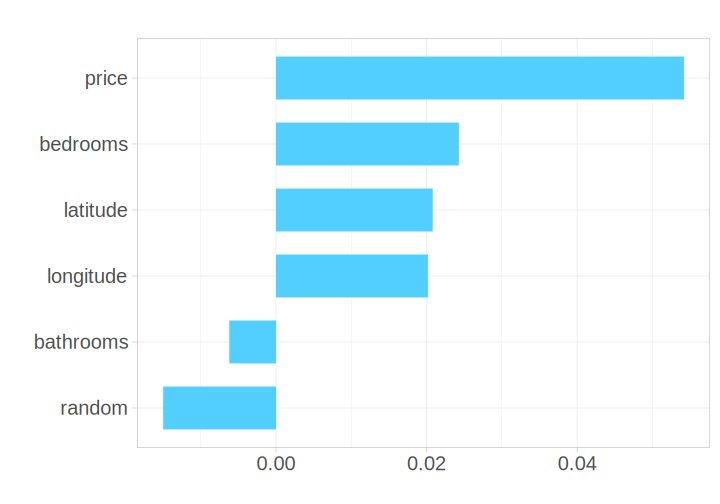 |
|
| Figure 9(a). Importances derived by dropping each column, retraining an RF classifier in R, and computing the change in out-of-bag accuracy. | Figure 9(b). Importances derived by dropping each column, retraining a scikit RF classifier, and computing the change in out-of-bag accuracy. |
The permutation importance code shown above uses out-of-bag (OOB) samples as validation samples, which limits its use to RFs. If we rely on the standard scikit score() function on models, it's a simple matter to alter the permutation importance to work on any model. Also, instead of passing in the training data, from which OOB samples are drawn, we have to pass in a validation set. (Don't pass in your test set, which should only used as a final step to measure final model generality; the validation set is used to tune and probe a model.) Here's the core of the model-neutral version:
The use of OOB samples for permutation importance computation also has strongly negative performance implications. Using OOB samples means iterating through the trees with a Python loop rather than using the highly vectorized code inside scikit/numpy for making predictions. For even data sets of modest size, the permutation function described in the main body of this article based upon OOB samples is extremely slow.
On a (confidential) data set we have laying around with 452,122 training records and 36 features, OOB-based permutation importance takes about 7 minutes on a 4-core iMac running at 4Ghz with ample RAM. The invocation from a notebook in Jupyter Lab looks like:
Using a validation set with 36,039 records instead of OOB samples, takes about 8 seconds (n_samples=-1 implies use all validation samples):
If we further let the importance is function use the default of 3,500 samples taken randomly from the validation set, the time drops to about 4 seconds. These test numbers are completely unscientific but give you a ballpark of speed improvement. 7 minutes down 4 seconds is pretty dramatic. (See the next section on validation set size.)
Using the much smaller rent.csv file, we see smaller durations overall but again using a validation set over OOB samples gives a nice boost in speed. With a validation set size 9660 x 4 columns (20% of the data), we see about 1 second to compute importance is on the full validation set and 1/2 second using 3,500 validation samples.
We added a permutation importance function that computes the drop in accuracy using cross validation. Even for the small data set, the time cost of 32 seconds is prohibitive because of the retraining involved. Here's the invocation:
Similarly, the drop column mechanism takes 20 seconds:
It's faster than the cross validation because it is only doing a single training per feature not k trainings per feature.
We also looked at using the nice Eli5 library to compute permutation importances. Eli5's permutation mechanism also supports various kinds of validation set and cross validation strategies; the mechanism is also model neutral, even to models outside of scikit. On the confidential data set with 36,039 validation records, eli5 takes 39 seconds. On the smaller data set with 9660 validation records, eli5 takes 2 seconds. Here's the invocation we used:
| 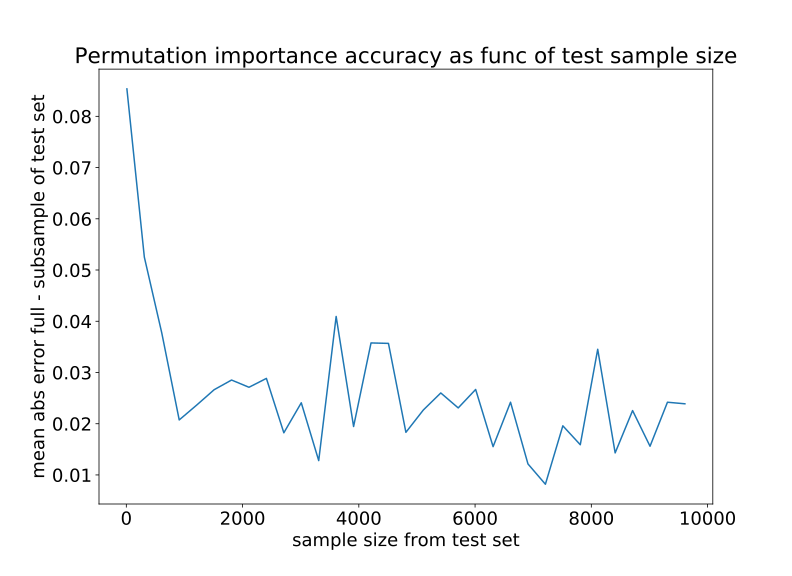 | 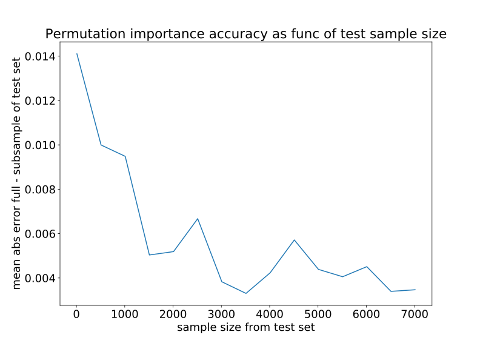 |
| Figure 10(a). rent.csv data set. Mean absolute difference of feature importance values for a validation set subsample compared to feature important values computed using entire validation set. Regressor on 38,640 training records and 4 features; 9,660 validation records. | Figure 10(b). Confidential data set. Mean absolute difference of feature importance values for a validation set subsample compared to feature important values computed using entire validation set. Binary classifier on 452,122 training records and 36 features; 36,039 validation records. |
Naturally, this is only two data sets and so the importances function takes a n_samples argument so you can experiment (-1 implies entire validation set.) Our rfpimp package is really meant as an educational exercise but you're welcome to use the library for actual work if you like. :)
Feature importance is a key part of model interpretation and understanding the business problem that originally drove you to create a model in the first place. We have to keep in mind, though, that the feature importance mechanisms we describe in this article consider each feature individually. If all features are totally independent and not correlated in any way, than computing feature importance individually is no problem. If, however, two or more features are collinear (correlated in some way but not necessarily with a strictly linear relationship) computing feature importance individually can give unexpected results.
The effect of collinear features is most stark when looking at drop column importance. Figure 11(a) shows the drop column importance on a decent regressor model (R2 is 0.85) for the rent data. Figure 11(b) shows the exact same model but with the longitude column duplicated. At first, it's shocking to see the most important feature disappear from the importance graph, but remember that we measure importance is a drop in accuracy. If we have two longitude columns and drop one, there should not be a change in accuracy (at least for a RF model that doesn't get confused by duplicate columns.) Without a change in accuracy from the baseline, the importance for a dropped feature is zero.
| Drop column importance dup'd longitude column | |
|---|---|
| 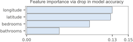 | |
| Figure 11(a). Drop column importance strategy using random forest regressor with R2=0.85 (so a pretty decent predictor of rent price). | Figure 11(b). After duplicating longitude column and rerunning drop column importance. Both longitude columns disappear because removing one does not affect model accuracy at all. |
It's also worth pointing out that feature importances should only be trusted with a strong model. If your model does not generalize accurately, feature importances are worthless. If your model is weak, you will notice that the feature importance is fluctuate dramatically from run to run. That's why we mention the R2 of our model.
The effect of collinear features on permutation importance is more nuanced and depends on the model; we'll only discuss RFs here. During decision tree construction, node splitting should choose equally important variables roughly 50-50. So, in a sense, conking the RF on the head with a coconut by permuting one of those equally important columns should be half supported by the other identical column during prediction. In fact, that's exactly what we see empirically in Figure 12(b) after duplicating the longitude column, retraining, and rerunning permutation importance.
| Permutation importance dup'd longitude column | |
|---|---|
| 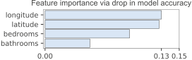 | |
| Figure 12(a). Permutation importance strategy using random forest regressor. | Figure 12(b). After duplicating longitude column and rerunning permutation importance. Both longitude columns share importance and so we see roughly 50-50 important. |
When features are correlated but not duplicates, the importance should be shared roughly per their correlation (in the general sense of correlation, not the linear correlation coefficient). We did an experiment adding a bit of noise to the duplicated longitude column to see its effect on importance. The longitude range is 0.3938 so let's add uniform noise in range 0..c for some constant c that is somewhat smaller than that range:
With just a tiny bit of noise, c = .0005, Figure 13(a) shows the noisy longitude column pulling down the importance of the original longitude column. Figure 13(b) shows the importance graph with c = .001.
| Permutation importance dup'd longitude + noise column | |
|---|---|
| 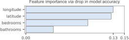 | |
| Figure 13(a). With uniform noise in range 0-0.0005, noisy longitude column pulls down the importance of the real column. | Figure 13(b). With uniform noise in range 0-0.001, noisy longitude column doesn't pull down the importance of the real column very much. |
We performed the same experiment by adding noise to the bedrooms column, as shown in Figure 14. Notice that it chose the noisy column in Figure 14(a) as the most important, which happened by chance because they are so similar.
| Permutation importance dup'd bedrooms + noise column | |
|---|---|
| 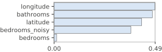 | 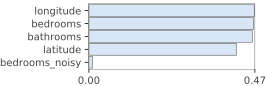 |
| Figure 14(a). With uniform noise in range 0-1, noisy bedrooms column pulls down the importance of the real column. | Figure 14(b). With uniform noise in range 0-3, noisy bedrooms column doesn't pull down the importance of the real column very much. |
While we're at it, let's take a look at the effect of collinearity on the mean-decrease-in-impurity (gini importance). Figure 15 illustrates the effect of adding a duplicate of the longitude column when using the default importance from scikit RFs. As with the permutation importance, the duplicated longitude column pulls down the importance of the original longitude column because it is sharing with the duplicated column.
| Mean-decrease-in-impurity (gini) importance dup'd longitude column | |
|---|---|
| 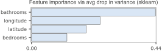 | 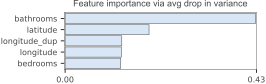 |
| Figure 15(a). With uniform noise in range 0-0.0005, noisy longitude column pulls down the importance of the real column. | Figure 15(b). With uniform noise in range 0-0.001, noisy longitude column doesn't pull down the importance of the real column very much. |
Adding a noisy duplicate of the longitude column behaves like permutation importance as well, stealing importance from the original longitude column in proportion to the amount of noise, as shown in Figure 16. Naturally, we still have the odd behavior that bathrooms is considered the most important feature.
| Mean-decrease-in-impurity (gini) importance dup'd longitude + noise column | |
|---|---|
| 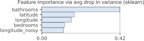 | 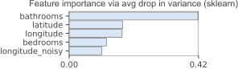 |
| Figure 16(a). With uniform noise in range 0-0.0005, noisy longitude column pulls down the importance of the real column, just as with permutation importance. | Figure 16(b). With uniform noise in range 0-0.001, noisy longitude column doesn't pull down the importance of the real column very much, just as with permutation importance. |
From these experiments, it's safe to conclude that permutation importance (and mean-decrease-in-impurity importance) computed on random forest models spreads importance across collinear variables. The amount of sharing appears to be a function of how much noise there is in between the two. We do not give evidence that correlated, rather than duplicated and noisy variables, behave in the same way. On the other hand, one can imagine that longitude and latitude are correlated in some way and could be combined into a single feature. Presumably this would show twice the importance of the individual features.
You can find all of these collinearity experiments in collinear.ipynb
The takeaway from this article is that the most popular RF implementation in Python (scikit) and R's RF default importance strategy do not give reliable feature importances when “... potential predictor variables vary in their scale of measurement or their number of categories.” (Strobl et al). Rather than figuring out whether your data set conforms to one that gets accurate results, simply use permutation importance. You can either use our Python implementation (rfpimp via pip) or, if using R, make sure to use importance=T in the Random Forest constructor then type=1 in R's importance() function.
Finally, we'd like to recommend the use of permutation, or even drop-column, importance strategies for all machine learning models rather than trying to interpret internal model parameters as proxies for feature importances.
If your data set is not too big or you have a really beefy computer, you can always use the drop-column importance measure to get an accurate picture of how each variable affects the model performance.
The overall github repo associated with this article has the notebooks and the source of a package you can install. You can explore the key (documented) functions directly in rfpimp.py or just install via pip:
We also created R Jupyter notebooks to explore these issues: R regressors and R classifiers.
Unlike scikit, R has a permutation importance implementation, but it's not the default behavior. Make sure that you don't use the MeanDecreaseGini column in the importance data frame. You want MeanDecreaseAccuracy, which only appears in the importance data frame if you turn on importance=T when constructing the Random Forest. The default when creating a Random Forest is to compute only the mean-decrease-in-impurity. Here's the proper invocation sequence:
It seems a shame that we have to choose between biased feature importances and a slow method. Can't we have both? And why is the decrease in gini method biased in the first place? Answering these questions requires more background in RF construction that we have time to go into right now, but here's a bit of a taste of an answer for those of you ready to do some further study.
In short, the answer is yes, we can have both. Extremely randomized trees, at least in theory, do not suffer from this problem. Better still, they're generally faster to train that RFs, and more accurate. We haven't done rigorous experiments to confirm that they do indeed avoid the bias problem. If you try running these experiments, we'd love to hear what you find, and would be happy to help share your findings!
Understanding the reason why extremely randomized trees can help requires understanding why Random Forests are biased. The issue is that each time we select a break point in a variable in a Random Forest, we exhaustively test every level of the variable to find the best break point. This, of course, makes no sense at all, since we're trying to create a semi-randomized tree, so finding the optimal split point is a waste of time. Extremely randomized trees avoid this unnecessary step.
As well as being unnecessary, the optimal-split-finding step introduces bias. For a variable with many levels (in the most extreme case, a continuous variable will generally have as many levels as there are rows of data) this means testing many more split points. Testing more split points means there's a higher probability of finding a split that, purely by chance, happens to predict the dependent variable well. Therefore, variables where more splits are tried, will appear more often in the tree. This leads to the bias in the gini importance approach that we found.